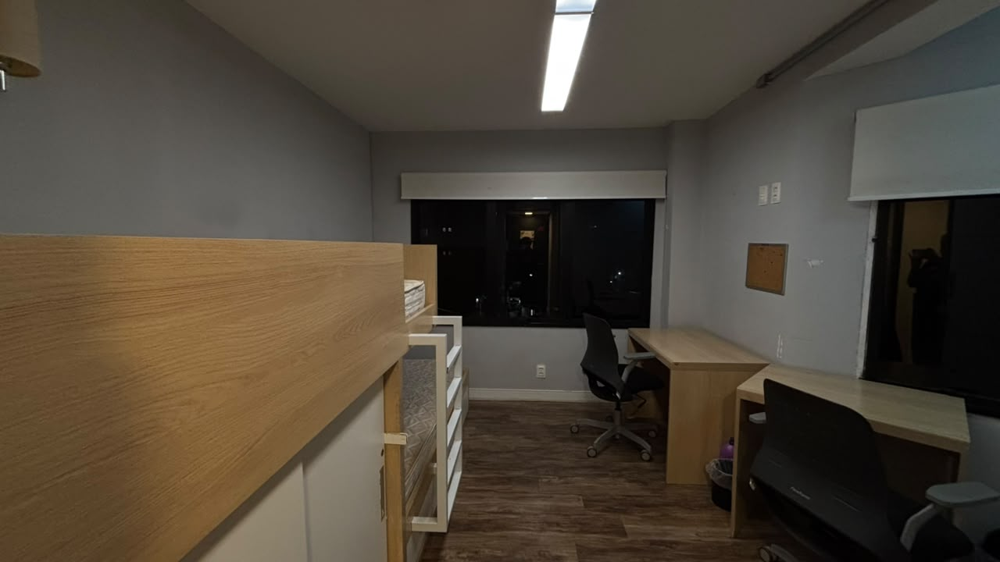
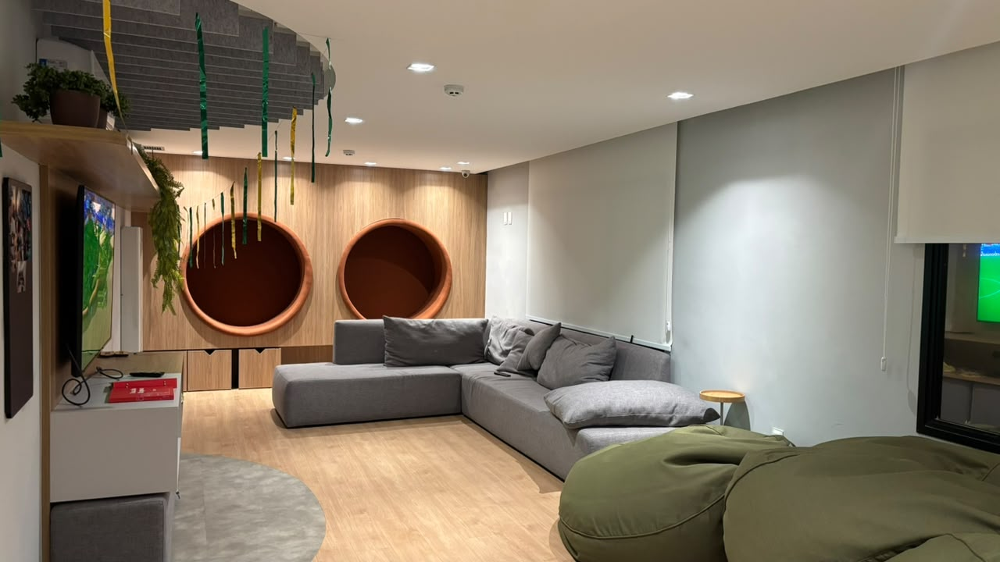
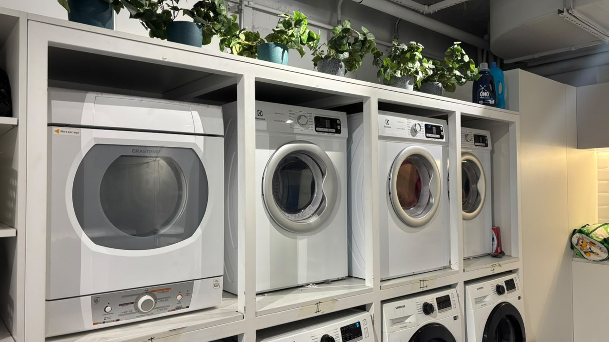

Leve o essencial na chegada
Não se preocupe em trazer tudo de uma vez. Muitos itens podem ser comprados depois, com mais calma, quando você já estiver em São Paulo.
Parabéns pela sua aprovação no Insper!
Sabemos que este é um momento cheio de expectativas e dúvidas. Para muitos, será a primeira vez morando longe de casa, vivendo em São Paulo ou compartilhando um alojamento.
Esta página foi criada para reunir, em um único lugar, tudo o que gostaríamos de ter sabido antes de chegar ao Insper e na Toca. Aqui você encontrará orientações sobre o enxoval, o alojamento, a região em que vivemos, dicas para mudança e recomendações de estudantes que já passaram por essa mesma experiência.
Esperamos que este guia torne sua chegada mais tranquila e permita que você aproveite essa nova etapa com mais segurança e confiança. Seja muito bem-vindo(a)!
A Toca já conta com a estrutura básica para receber os moradores. Ainda assim, alguns itens de uso pessoal são importantes para tornar sua rotina mais confortável desde os primeiros dias. A lista abaixo reúne uma sugestão de enxoval com os principais itens que recomendamos trazer e que muitas vezes podem passar despercebido.
Dica rápida: não se preocupe se você não conseguir trazer ou comprar tudo antes da mudança. Muitos desses itens podem ser adquiridos facilmente em São Paulo, e é comum que os moradores completem seu enxoval aos poucos, conforme conhecem a região e entendem melhor suas necessidades. O mais importante é chegar com o essencial e aproveitar os primeiros dias para se organizar com tranquilidade.
A Toca é o alojamento destinado aos estudantes do Programa de Bolsas do Insper. Mais do que um lugar para morar, ela será o lar de muitos bolsistas durante a graduação, reunindo estudantes que compartilham a mesma experiência de adaptação à universidade e à cidade de São Paulo. Seus espaços foram pensados para oferecer conforto, organização e um ambiente favorável tanto para os estudos quanto para a convivência.
O prédio é dividido em três andares e um subsolo. No térreo encontram-se os principais espaços compartilhados, como a sala de convivência e a cozinha comunitária, além de três quartos. Este é o único andar que pode acomodar tanto moradores quanto moradoras, conforme a organização do semestre.
O primeiro e o segundo andares são destinados aos quartos masculinos, enquanto o terceiro andar abriga os quartos femininos. Todos os andares possuem dois banheiros de uso compartilhado entre os moradores do respectivo pavimento.
Os quartos podem ser duplos ou triplos e já contam com camas, guarda-roupa, armários, mesa de estudos, cadeira, luminária, sapateira e ar-condicionado, oferecendo a estrutura básica para o dia a dia dos residentes.


A sala de estar é um espaço destinado tanto aos estudos quanto aos momentos de integração entre os moradores. Já a cozinha comunitária dispõe de geladeiras, armários individuais, eletrodomésticos, panelas, pratos e talheres de uso coletivo. Cada residente possui uma prateleira na geladeira e um armário exclusivo para armazenar seus alimentos e pertences. Embora existam utensílios compartilhados, é recomendado que cada estudante traga seus próprios pratos, talheres e recipientes para o uso diário.
A limpeza da cozinha é realizada pelos próprios moradores por meio de uma escala organizada no início de cada semestre. Durante esse período, o ambiente permanece temporariamente fechado para que a limpeza seja realizada.
No subsolo está localizada a lavanderia comunitária, equipada com quatro máquinas de lavar, quatro secadoras, pia para lavagem manual, ferro de passar, cestos de roupa e varais compartilhados. Para garantir que todos possam utilizar os equipamentos de forma organizada, existe uma planilha de agendamento, na qual cada morador pode reservar até dois horários de quatro horas por semana para utilizar as máquinas e secadoras.
O subsolo também abriga o bicicletário, freezers de uso comum e uma área de armários individuais, onde cada residente possui um espaço exclusivo para guardar seus pertences.

A Toca está localizada a cerca de 10 a 15 minutos de caminhada do Insper pela Faria Lima, em um trajeto tranquilo que rapidamente passa a fazer parte da rotina dos moradores. Ao longo do semestre, você também vai descobrindo, junto com outros residentes e estudantes, os melhores mercados, restaurantes, cafeterias e outros estabelecimentos da região, mas pode se adiantar pelo mapa.
Vale ressaltar que o residencial é muito bem posicionado, próximo á estação Vila Olímpia e ao Parque Ibirapuera! Ao longo do semestre, você também vai descobrindo, junto com outros residentes e estudantes, os melhores mercados, restaurantes, cafeterias e outros estabelecimentos da região, mas pode se adiantar pelo mapa.
Se esta é a sua primeira vez morando em São Paulo, é natural que tudo pareça um pouco diferente no início. A rotina da cidade é bastante dinâmica, mas não se preocupe: em pouco tempo você estará familiarizado com os trajetos, horários e com o dia a dia da região.
Além de caminhar até o Insper e utilizar aplicativos de transporte, você perceberá que o metrô e os ônibus fazem parte da rotina da cidade e são excelentes opções para se locomover. Também é comum ouvir sobre o Bilhete Único, cartão utilizado para o transporte público que facilita o deslocamento e a integração entre ônibus e metrô, o qual você poderá requisitar quando já estiver morando em São Paulo.
O clima merece atenção. Em São Paulo é comum que a temperatura mude ao longo do dia, por isso vale a pena ter sempre um casaco e um guarda-chuva por perto, mesmo quando a previsão indicar tempo firme.
Outra característica da cidade é a praticidade dos serviços. Compras realizadas pela internet frequentemente chegam no mesmo dia, e aplicativos de entrega costumam oferecer descontos interessantes, o que pode facilitar bastante a rotina nos primeiros meses, mas também fique atento com o fato de que a capital possui um custo de vida um pouco mais elevado que outras regiões.
Como toda grande cidade, São Paulo exige alguns cuidados. Procure manter atenção aos seus pertences, principalmente em locais movimentados e ao utilizar o celular na rua. Com alguns cuidados simples e a ajuda dos outros moradores da Toca, você rapidamente descobrirá novos lugares e se sentirá cada vez mais à vontade para aproveitar tudo o que a cidade tem a oferecer.
Por fim, não se preocupe tanto! Aconvivência com os outros residentes certamente resultará na sua adaptação de um modo confortável e logo mais estas informações se tornarão mais que comuns no seu cotidiano.
Aqui você encontra algumas dicas úteis compartilhadas por quem já vive a rotina da Toca e de São Paulo. Com o tempo, essa seção poderá reunir experiências reais de moradores e ex-moradores do alojamento.
Não se preocupe em trazer tudo de uma vez. Muitos itens podem ser comprados depois, com mais calma, quando você já estiver em São Paulo.
Separar seus itens logo nos primeiros dias ajuda bastante na adaptação e torna o espaço mais prático para a rotina.
Vale a pena descobrir mercados, farmácias, restaurantes e outros pontos úteis com a ajuda de moradores e estudantes mais antigos.
O clima em São Paulo pode mudar ao longo do dia, então é bom se preparar mesmo quando a previsão parecer estável.
funcionou?
Abaixo estão alguns dos principais links e contatos que você provavelmente utilizará durante sua jornada no Insper.